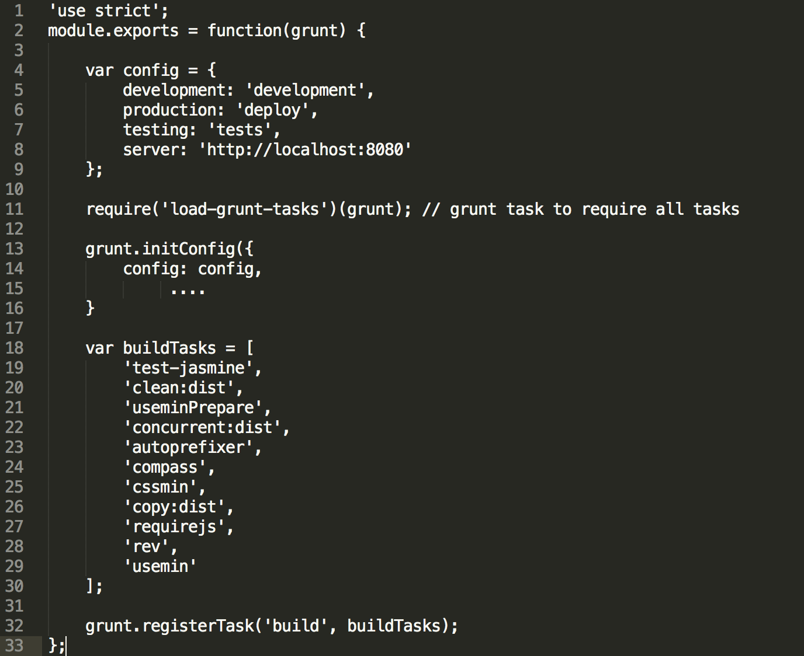

Jworks
Kickstarters 2016
Hi, my name is Tim.
CC-Lead: Automation & Tooling
Developer
Ordina Belgium
@VeeTeeDev
https://github.com/VeeTeeDev
Hi, my name is Michael.
Gulp ninja
Developer
Ordina Belgium
@MikeVe
https://github.com/MichaelOrdina
Topics
Introduction
Package Managers
Build Systems
Generators
E2E Testing
Introduction
Front 'End'?
- More like: Front 'alive and kicking'!
- Frameworks from nothing to ...
- Biggest change: buildsystems
- Dev environments
- ...
Package managers
Examples
- Lunix: apt-get, yum, ...
- Mac osX: brew, ...
- PHP: composer, ...
- Python: pip, easy_install, ...
- ...
Front-end
- Node: npm, bower
- Node package manager (NPM)
- Yes, npm install -g bower
- ...
NODE
Node
In software development, Node.js is an open-source, cross-platform runtime environment for developing server-side Web applications. Although Node.js is not a JavaScript framework, many of its basic modules are written in JavaScript, and developers can write new modules in JavaScript. The runtime environment interprets JavaScript using Google's V8 JavaScript engine.
Node
- Event-driven architecture
- Asynchronous I/O
- Facilitated by the Linux Foundation's Collaborative Projects program
- Corporate users of Node.js: Groupon, Netflix, PayPal, ...
NPM
Npm specs
- General node package manager
- Multiple versions in tree possible
- ...
Famous npm packages
NPM commands
$ npm install (--save --save-dev -g) $ npm update $ npm init $ npm uninstall
Bower
Bower specs
- Installed through npm (node package)
- Only 1 dependency version in the tree
- Special for the web
- ...
Famous bower packages
Bower commands
$ bower install (--save) $ bower update $ bower init $ bower uninstall
Time for a tutorial
- NODE
- NPM
- BOWER
- ...
Build systems
Building you say?
- Build
- Serve
- Generate
- ...
Running scripting...!
Grunt
Grunt
The javascript task runner
Yes, it's a taskrunner. They all are... In one word: automation. The less work you have to do when performing repetitive tasks like minification, compilation, unit testing, linting, etc, the easier your job becomes.
Grunt
- Node app
- Runs tasks defined in a js file
- Tasks are plugged-in node apps
Common actions
$ grunt build $ grunt server (serve) $ grunt test
These 'actions' should get implemented by the user
config example
Grunt
There is a downside. Grunt is doing a lot of I/O. Each output of a task is written to disk. The next task will read that output, do stuff, and write it back.
Gulp to the rescue ?
Gulp
Gulp
$ gulp build $ gulp server $ gulp test
Gulp
- Chaining
- Less I/O means faster...
- ...
config example

Webpack
Webpack
- Like Gulp or Grunt, but different
- Does more with less
- Fairly easy configuration
- Bundles files
- Uses JavaScript modules
- Reduces the amount of (XHR) requests
Basics
$ npm install webpack -g $ webpack app.js bundle.js $ webpack app.js bundle.js --watch
Angular-cli
Angular-cli
- Pushed by google for angular2
- Based on ember-cli with broccoli
- Building
- Serving
- Generator
Angular-cli
$ ng init $ ng build $ ng serve $ ng e2e $ ng ...
Angular-cli
Cool but... Changing back to webpack for dev environment because of performance issues on broccoli for dev-server. Some feature that are available and very much appreciated by devs are not yet supported.
- Autoreload for css !important
- Speed for reloading
Generators
What is this?
Lazy devs
Yes we are lazy. So why don't we script stuff once to run it 100000 times. Why don't we automate ? Euch!?! We do. Ok, you're building a webapp and for the 12th time, you need to build a new component. What do you do? Copy and paste a component. Refactor... and run into bugs because of refactoring.
Yeoman
Yeoman is generator solution for WEB SCAFFOLDING. Generators based on this principle let the user create a webapp from scratch in one command line action. A whole webapp struture gets created. There are already more than thousands different yeoman generators. But there is more. Some project provide component generators as well.
You need a new component
$ xxx generate xxx-component
Angular-cli: CLI tool for Angular2
$ ng new {{myWebApp}}
$ ng serve
$ ng generate component my-new-component
$ ng g service my-new-service
$ ng g interface my-new-interface
Tutorial time
Angular-cli
Initialize new app
$ mkdir kickstarter-ng-cli $ cd kickstarter-ng-cli $ ng new kickstarter-ng-cli $ ng serve
Generate new stuff
$ ng generate component my-new-component $ ng g service my-new-service $ ng g interface my-new-interface
Gulp
What is gulp?
- Automation - gulp is a toolkit that helps you automate painful or time-consuming tasks in your development workflow.
- Platform-agnostic - Integrations are built into all major IDEs and people are using gulp with PHP, .NET, Node.js, Java, and other platforms.
- Strong Ecosystem - Use npm modules to do anything you want + over 2000 curated plugins for streaming file transformations
- Simple - By providing only a minimal API surface, gulp is easy to learn and simple to use
What else is there besides writing code?
- Minification
- Concatination
- Vendor Prefixes
- Compilation: Sass, Typescript, Less, etc.
- Optimising 3rd party code
- Testing
- Code analysis
- Serving your project locally
- Building your project
- ...
How does it work?
- Create a gulpfile where you define gulp tasks.
- Create and configure tasks.
- Run the gulp tasks from the command line.
- Let gulp do it's magic...

Example
compiling a Sass file with gulp
First things first
Installing gulp and other requirements
Global command line interface
npm install -g gulp-cli
Local instance
npm init && npm install gulp --save-dev
After installing create a gulpfile.js in your project's root directory (same as package.json)
Sass
Installing a sass compiler for gulp
Global sass compiler
npm install -g sass
Gulp sass
npm install gulp-sass --save-devhttps://www.npmjs.com/package/gulp-sass
Including it in our gulpfile
var gulp = require('gulp'),
gulpSass = require('gulp-sass');
Create a gulp task in the gulpfile(.js)
Let's create our first gulp task and name it 'styles'
gulp.task('styles', function(){
log('Compiling Sass -> Css');
return gulp
.src(./src/assets/styles/main.scss)
.pipe(gulpSass({outputStyle: 'compressed'}))
.on('error', gulpSass.logError)
.pipe(gulp.dest('./app/assets/styles/');
});
Let me walk you trough that
gulp.task('styles', function(){ //some awesome gulp stuff... });
First we create a new gulp task. The gulp.task() function takes in 2 parameters, a string which is the name of the task (and also the argument to be entered at the command line), and a function that contains the task.
Let me walk you trough that
gulp.task('styles', function(){
log('Compiling Sass -> Css');
return gulp
.src(./src/assets/styles/main.scss)
.pipe(gulpSass({outputStyle: 'compressed'}))
.on('error', gulpSass.logError)
.pipe(gulp.dest('./app/assets/styles/');
});
In our gulp task we address a source file by using the gulp.src() function
- It takes a string or a string[] as parameter.
- the string is the location of the file to be processed.
- If multiple files need to be processed, you pass an array of strings.
- Patterns like ./**/*.scss are also accepted
-
Note that in this case 'log' is another function in the gulpfile that logs the passed string to the terminal. (not shown in this example since this is another gulp plugin that we need to install)
Let me walk you trough that
gulp.task('styles', function(){
log('Compiling Sass -> Css');
return gulp
.src(./src/assets/styles/main.scss)
.pipe(gulpSass({outputStyle: 'compressed'}))
.on('error', gulpSass.logError)
.pipe(gulp.dest('./app/assets/styles/');
});
- Now that we have gathered our files to be processed, we can process them with our gulp plugin. (in this case gulp-sass)
- We 'pipe' the files trough the processor with the .pipe function, this function gets the returned files from the previous (.src) function.
- The pipe function takes a function, in this case gulpSass(), as parameter,
- gulpSass() takes an object as parameter, these are settings for configuring the compiler.
Let me walk you trough that
gulp.task('styles', function(){
log('Compiling Sass -> Css');
return gulp
.src(./src/assets/styles/main.scss)
.pipe(gulpSass({outputStyle: 'compressed'}))
.on('error', gulpSass.logError)
.pipe(gulp.dest('./app/assets/styles/');
});
- Gulp can also listen for events (in this case the 'error' event)
The .on function is the next step in our example stream, so if the previous functions have triggered the 'error' event, you can specify a callback to be executed if this event has been triggered. In this case if an 'error' event has been triggered we execute the logError function that comes with gulp-sass.
For more info on gulp-sass options: https://www.npmjs.com/package/gulp-sassLet me walk you trough that
gulp.task('styles', function(){
log('Compiling Sass -> Css');
return gulp
.src(./src/assets/styles/main.scss)
.pipe(gulpSass({outputStyle: 'compressed'}))
.on('error', gulpSass.logError)
.pipe(gulp.dest('./app/assets/styles/');
});
Once we have done all the steps we want to do in this task, we pipe the results to another function, namely gulp.dest(). gulp.dest() takes in a string as parameter and should be the path to the destination folder.
Note: not all tasks have a gulp.dest(), for example a typescript linter takes in some source files, then produces output to the console to show the errors. But then the stream ends without writing any files.
In Depth
Let's take an in depth look at some examples to add to your project
Note: keep in mind these are my personal preferences of gulp plugin's to use for the tasks, they might not always be the only option!
Overview
- Constant replace
- typescript styling
- typescript naar js
- sass naar css + minify
- build html
- imagemin
- copy static resources
- eventueel 3th party libs -> wiredep
- vendor bower component -> caching
- Dev-servers
- live reload
Constant replacement
Why?
Depending on which environment we are working in, we might want to use different variables (constants).
i.e. switching the backend baseurl between localhost:PORT to http://someapi.com for our services.
Gulp Plugin:
gulp-replace
npm install --save-dev gulp-replacehttps://www.npmjs.com/package/gulp-replace
For the current example we are going to use some additional plugins:
-
gulp-if (conditionally execute pipe)
npm install --save-dev gulp-if
https://www.npmjs.com/package/gulp-if -
yargs (command line arguments)
npm install --save-dev yargs
https://www.npmjs.com/package/yargs
Constant replacement implementation
var gulp = require('gulp'),
args = require('yargs').argv,
$ = require('gulp-load-plugins')({
lazy: true
});
gulp.task('constants', ()=>{
return gulp
.src('./src/constants.js')
.pipe($.if(!args.dev, $.replace(/\'http.*\'/g, '\'http://someapi.com\'')))
.pipe($.if(args.dev, $.replace(/\'http.*\'/g, '\'http://localhost:3000\'')))
.pipe(gulp.dest('./src/'));
});
Typescript Lint
Why?
To analyse your code quality of your project and make sure you use the same code style and it checks TypeScript code for most common mistakes and discrepancies without running the application.
Gulp Plugin:
gulp-tslint
tslint
npm install --save-dev tslint gulp-tslinthttps://www.npmjs.com/package/gulp-tslint
TS Lint implementation
gulp.task('lint', function () {
return gulp.src(['./src/*.ts','./src/**/*.ts'])
//add the option to use --verbose in cl to log all checked files
.pipe($.if(args.verbose, $.print()))
.pipe($.tslint({
formatter: 'prose',
configuration: {
'rules': { //rules go here, optionally you can use a tslint.json file }
}
}));
});
Typescript Compile
Why?
Compiling your typescript files to js for the browser to load.
Gulp Plugin:
gulp-typescript typescript (-g)
npm install --save-dev gulp-typescripthttps://www.npmjs.com/package/gulp-typescript
npm install -g typescript
Cleaning old scripts
Before we start compiling our typescript files, we need to make sure that we remove our old javascript files before every compile
var del = require('del'); // used for removing files
// our function takes a path so that we can also reuse it for cleaning other file types
function clean(path, next) {
// Log the current path to remove
log($.util.colors.gray('Cleaning: ' + path));
del(path)
.then(function () {
// execute callback for gulp-stream
next();
});
}
gulp.task('clean-js', function (cb) {
clean(config.local + '**/*.js', cb);
});
Compiling typescript
gulp.task('typescript-compile', function () {
return gulp.src(['./src/**/*.ts']])
.pipe($.typescript({
removeComments: true,
declaration: true,
noExternalResolve: false
}))
.pipe(gulp.dest('./local/'));
});
Running typescript sequence
Now that we have our clean task and compilation task, we can create a simple alias task that runs both tasks in sequence.
gulp.task('scripts', function (cb) {
// with args we can create an extra option for our typescripts to be linted
with the previously created tslint task if we add -lint to the console
if (args.lint){
$.runSequence('tslint', 'clean-js', 'typescript-compile', cb);
} else {
$.runSequence('clean-js', 'typescript-compile', cb);
}
});
Sass Compile
Why?
Compiling your Sass files to css for the browser to load.
Gulp Plugin:
gulp-sass sass (-g)
npm install --save-dev gulp-sasshttps://www.npmjs.com/package/gulp-sass
npm install -g sass
Cleaning old styles
Just like with typescript, we can reuse our clean function and create a task that cleans all the old css files first.
gulp.task('clean-styles', function (cb) {
clean(config.local + '**/*.css', cb);
});
Compiling sass
gulp.task('sass-compile', function () {
return gulp.src('./src/**/*.scss')
.pipe($.plumber())
.pipe($.sass())
.on('error', $.sass.logError)
.pipe(gulp.dest('./local/'));
});
Running Styles sequence
Now that we have our clean and compile task we can once again create a sequence task to run both.
gulp.task('styles', function (cb) {
$.runSequence('clean-styles', 'sass-compile', cb);
});
Jade Compile
Why?
Compiling your Jade files to html for the browser to load.
Gulp Plugin:
gulp-jade
npm install --save-dev gulp-jadehttps://www.npmjs.com/package/gulp-jade
Cleaning old markup
Once again, we clean out our old files, in this case html. (I'ts starting to get clear why we created a clean function now, doesn't it?)
gulp.task('clean-markup', function (cb) {
clean(config.local + '**/*.html', cb);
});
Compiling Jade
gulp.task('jade-compile', function () {
return gulp.src('./src/**/*.jade')
.pipe($.plumber())
.pipe($.jade())
.pipe(gulp.dest('./local/'));
});
Running Markup sequence
And just like both our typescript and sass tasks, we create a sequence to clean up and compile.
gulp.task('styles', function (cb) {
$.runSequence('clean-markup', 'jade-compile', cb);
});
Imagemin
Why?
Minify PNG, JPEG, GIF and SVG images, for optimal loading performance.
Gulp Plugin:
gulp-imagemin
npm install --save-dev gulp-imageminhttps://www.npmjs.com/package/gulp-imagemin
Cleaning old images
gulp.task('image-clean', function(cb){
// this time we give an array to our clean function
clean(['./local/assets/images/**/*.png','./local/assets/images/**/*.gif','./local/assets/images/**/*.jpg'], cb);
});
Compressing Images
gulp.task('images-compress', function(){
return gulp
.src(config.images.src)
.pipe($.plumber())
.pipe($.imagemin())
.pipe(gulp.dest(config.images.localDest));
});
Running Imagemin sequence
gulp.task('imagemin', function (cb) {
$.runSequence('image-clean', 'images-compress', cb);
});
Copying static files
Why?
Simply copy all files that need no editing or compiling from src.
- favicon
- fonts
- html (when not using jade or any other html engine)
- ...
Gulp Plugin:
None
Gulp simply takes the files from our source and pipes (copies) them to the destination.
Copy Statics
gulp.task('dev-statics-copy', function(){
return gulp
.src(['./src/favicon.ico', './src/**/*.ttf'])
.pipe(gulp.dest(config.local));
});
Also for static files we create a clean task and a task for running them in sequence.
Same way we did in the previous examples
One more step
Now that we have processed all our resources, there is one more step before we can serve our project.

Injecting our CSS & Javascript
Why?
Automatically link our javascript and css in our index.html file. This keeps our index file always up to date, it uses our bower.json file for 3rd-party libraries and gulp inject for our project files.
Plugins:
wiredep
gulp-inject
npm install --save-dev wiredep gulp-injecthttps://www.npmjs.com/package/wiredep https://www.npmjs.com/package/gulp-inject
Preparing index.html
To tell wiredep and inject where our files should be placed, we need to add some comments to our hmtl file. Since in our example we are using jade, we will add it to our index.jade file, so that on every compilation we get a clean file.
HTML
<html> <head< <!-- bower:css --> <!-- endbower --> <!-- inject:css --> <!-- endinject --> </head> <body> <!-- bower:js --> <!-- endbower --> <!-- inject:js --> <!-- endinject --> </body> </html>
Jade
html head // bower:css // endbower // inject:css // endinject body // bower:js // endbower // inject:js // endinject
Wiredep
Wiredep is used to read our bower.json file and inject the installed libraries in the index.html between the bower and endbower comments.
Note that the order our bower.json dependencies matter!(for example, make sure you have jquery before angular, since it needs to be loaded first)
"dependencies": {
"jquery": "^2.2.3",
"angular": "^1.5.3",
"font-awesome": "^4.5.0"
}
Load wiredep
Since wiredep is not a gulp plugin, we cannot load it with $, and since we are using gulp, we use wiredep's stream
var wiredep = require('wiredep').stream
Task + Configuration
Task
gulp.task('dev-injector', function () {
return gulp
.src('./local/index.html')
.pipe(wiredep(config.getWiredepDefaultOptions()))
.pipe(gulp.dest('./local/'));
});Configuration
config.getWiredepDefaultOptions = function () {
var options = {
bowerJson: require('./bower.json'),
directory: './bower_components',
ignorePath: '..'
}
return options;
};Gulp Inject
gulp-inject is used to inject our project files (js & css) into our index.hml
Here too, order matters!for example in our angular project, we load our main app file first, then modules, then all the others.
js: {
all: [
local + 'app.js', // main
local + '*.js', // config, constants
local + '**/*.module.js', // dependency modules
local + '**/*.js'
]
}
Adding inject to the stream
gulp.task('dev-injector', function () { return gulp .src('./local/index.html') .pipe(wiredep(config.getWiredepDefaultOptions())) .pipe($.inject( gulp.src( config.js.all, { read: false }), { relative: true })) .pipe($.inject( gulp.src( // single file, since our sass compiles everything to main.css './local/assets/main.css', { read: false }), { relative: true })) .pipe(gulp.dest('./local/')); });
The result
<!-- bower:css--> <link rel="stylesheet" href="/bower_components/font-awesome/css/font-awesome.css" /> <!-- endbower--> <!-- inject:css--> <link rel="stylesheet" href="assets/main.css"> <!-- endinject--> <!-- bower:js--> <script src="/bower_components/jquery/dist/jquery.js"></script> <script src="/bower_components/angular/angular.js"></script> <!-- endbower--> <!-- inject:js--> <script src="app.js"></script> <script src="home/home.module.js"></script> <script src="home/home.controller.js"></script> <!-- endinject-->
Ready to serve
Phew, that was a lot of tasks, now that we have all our resources, and injected them in our html. Lets finally serve them to our browser.
Serving + Live Reload
Final DEV Build
Before we start serving, lets create a sequence task to build our complete package for local serving.
gulp.task('dev-package', function(cb){
$.runSequence(['dev-styles', 'dev-scripts', 'dev-markup', 'dev-imagemin', 'dev-statics'], 'dev-injector', cb);
});
BrowserSync
BrowserSync is the plugin that we are going to use to autoreload our browsers when working on our project.
npm install --save-dev browser-sync
Lets add it to our gulpfile, since it is not a gulp-plugin.
var browserSync = require('browser-sync');
BrowserSync Function
Let's set up our BrowserSync
function startBrowserSync(isDev) {
// return if browserSync is allready running
if (browserSync.active) {
return;
}
// watch on files for reloading
if(isDev){
gulp.watch(config.src + '**/*.scss', ['dev-styles']);
gulp.watch(config.src + '**/*.ts', ['dev-scripts']);
gulp.watch(config.src + '**/*.jade', ['dev-markup']);
}
var options = {
// server port
proxy: 'localhost:7001',
// project port, for browser load
port: 9010,
// files to watch, browser will reload on change.
files: ['./local/**/*.*'],
ghostMode: {
clicks: true,
location: false,
forms: true,
scroll: true
},
injectChanges: true,
logFileChanges: true,
logLevel: 'debug',
logPrefix: 'BrowserSync',
notify: true,
// wait for tasks to complete before reloading.
reloadDelay: 5000
};
// start browserSync, giving it the above options.
browserSync(options);
}
Serve Function
In our project I have included a node server that is set up to run a project with the current setup. Let's create a function to link it with our browserSync.
Nodemon
To watch for server events, we are going to use gulp-nodemon, nodemon is a node watcher that gives us access to server events like restart, start, crash, exit, ...
npm install --save-dev gulp-nodemon
Server events
function serve(isDev) {
var nodeOptions = {
script: './gulpfile.server.js',
watch: './gulpfile.server.js',
delayTime: 5000,
env: {
// port = browserSync proxy
'PORT': 7001,
'NODE_ENV': isDev ? 'dev' : 'build'
}
};
// run nodemon to start our server
return $.nodemon(nodeOptions)
// reload browser sync if the server itself restarts
.on('restart', function (evt) {
log('*** nodemon restarted ***');
log('Files Changed on restart: ' + evt);
setTimeout(function () {
browserSync.notify('Reloading BrowserSync...');
browserSync.reload({
stream: false
});
}, 1000);
})
// once our server starts, browserSync starts as well
.on('start', function () {
$.util.log($.util.colors.green('*** nodemon started ***'));
startBrowserSync(isDev);
})
// terminal loggin on crash and exit
.on('crash', function () {
$.util.log($.util.colors.red('*** nodemon crashed ***'));
$.util.log($.util.colors.yellow('check errors for more information'));
$.util.log($.util.colors.yellow('nodemon will attempt to restart automaticaly when server file is changed.'));
})
.on('exit', function () {
$.util.log($.util.colors.blue('*** nodemon exited cleanly ***'));
});
}
Linking our tasks to browserSync
BrowserSync currently has no idea when our tasks are finished, therefore we will add some additional pipes to our tasks for the files that we are 'watching' on: 'dev-typescript-compile', 'dev-styles-compile' and 'dev-markup-compile'.
Simply add the following code
.pipe(browserSync.stream());
after
.pipe(gulp.dest(config.local))
Serve sequence
Now that we have our server set up, let's create a sequence to run it as a task.
gulp.task('serve', function (cb) {
// serve builds our package, then serves our project by the server task.
$.runSequence('dev-package','server', cb);
});
gulp.task('server', function(){
serve(true);
});
E2E Testing
What is E2E testing
Let's say we have an applicaton with a main view. This main view has a simple contact list. Clicking on a contact makes the user navigate to a detail page. On the detail page we have a button to go back, or to go to an edit page. Easy? yes. Now, before we can release a new version of our application, we need to test for regression. We hire someone that navigates to our UI, clicks some links and check the outcome. forEach('release'); ? Who wants to do this ?
Yes we automate!
E2E testing
As applications grow in size and complexity, it becomes unrealistic to rely on manual testing to verify the correctness of new features, catch bugs and notice regressions. Unit tests are the first line of defense for catching bugs, but sometimes issues come up with integration between components which can't be captured in a unit test. End-to-end tests are made to find these problems.(Angular Docs)
What is Codecoverage ?
Tools like Istambul provide us with a way to check how many lines of are coded are getting tested.
Regards Jworks!
Try not to get lost...!